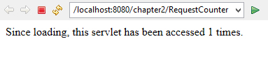
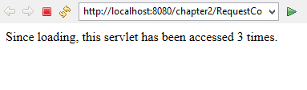

2.6 The Servlet Life Cycle
From the previous examples, you learnt a servlet has methods like doGet(), doPost(), etc. to deal with different kinds of HTTP requests.
To better understand the behavior of servlets, let’s take a look at the life cycle of servlets. A servlet is basically a small Java program that runs within a Web server. It can receive requests from clients and return responses. The whole life cycle of a servlet breaks up into 3 phases:
Initialization: A servlet is first loaded and initialized usually when it is requested by the corresponding clients.
Service: After initialization, the servlets serve clients on request, implementing the application logic of the web application they belong to.
Destruction: When all pending requests are processed and the servlets have been idle for a specific amount of time, they may be destroyed by the server and release all the resources they occupy.
More specifically, the behavior of a servlet is described in javax.servlet.Servlet interface, in which the following methods are defined:
- public void init(ServletConfig config) throws ServletException : This method is called once when the servlet is loaded into the servlet engine, before the servlet is asked to process its first request. The init method has a ServletConfig parameter. The servlet can read its initialization arguments through the ServletConfig object. How the initialization arguments are set is servlet engine dependent but they are usually defined in a configuration file.
- public void service(ServletRequest request, ServletResponse response) throws ServletException, IOException : This method is called to process a request and service method invokes doGet, doPost, doPut, doDelete, etc. methods as appropriate. So you have nothing to do with service() method but you override either doGet() or doPost() depending on what type of request you receive from the client.
It can be called zero, one or many times until the servlet is unloaded. Once a servlet is loaded, it remains in the server’s memory as a single object instance. - public void destroy() This method is called once just before the servlet is unloaded and taken out of service.
To demonstrate the servlet life cycle, we’ll begin with a simple example.
Following example shows a servlet that counts and displays the number of times it has been accessed. When the server loads this servlet, the server creates a single instance to handle every request made of the servlet.
package com.beginwithjava.servlet;
import java.io.*;
import javax.servlet.*;
import javax.servlet.annotation.*;
import javax.servlet.http.*;
@WebServlet("/Counter")
public class Counter extends HttpServlet
{
int count;
public void init(ServletConfig config)
throws ServletException
{
super.init(config);
count = 0;
}
protected void doGet(HttpServletRequest request,
HttpServletResponse response)
throws ServletException, IOException
{
// increment the counter
++count;
// display the message
PrintWriter out = response.getWriter();
response.setContentType("text/html");
out.println("<html><head><title>Request Counter</title></head><body>");
out.println("<p>Since loading, this servlet has been accessed "
+ count + " times.</p>");
out.println("</body></html>");
}
}
Output :

After click on refresh/reload button 2 more times.
